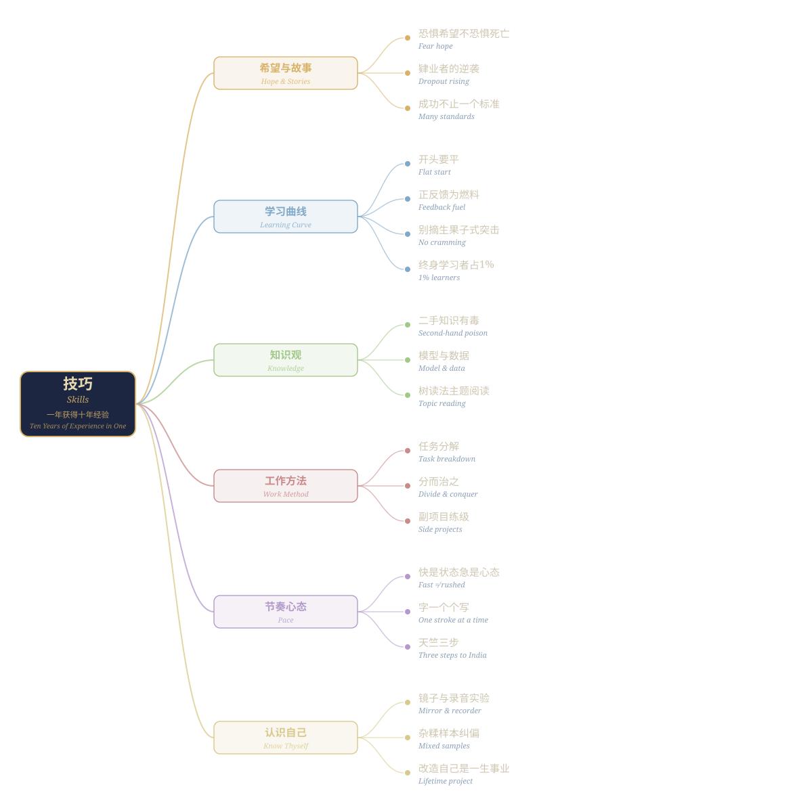

技巧
〇 · 书籍信息
基本信息
| 书名 | 《技巧：如何用一年时间获得十年的经验》——书名即全书的靶子：把「十年经验」祛魅为可加速积累的方法问题 |
|---|---|
| 作者 | 郝培强，网名 Tinyfool：iOS 开发者、OurCoders 独立开发者社区创始人、知乎/Blog 时代最有影响力的技术写作者之一——大学挂科 11 门的自学者，用亲身履历反证方法论 |
| 结构 | PART1 让人恐惧的不是死亡，而是希望 → PART2 我们的伟业是持续地改变自己 → PART3 前行的力量 → PART4 我们都活在生活之中——从故事到方法再到心态，坡度极缓的上升阶梯 |
| 体裁 | 博客文集：文风口语化、案例多为作者与朋友的亲身经历——它不是系统教材，是一套被反复验证过的「民间心法」 |
| 一句话 | 十年经验与一年经验之间只隔一个动作：持续跳出舒适区——否则你只是把一年的经验用了十年。 |
一 · 核心主题总览
一位自学者的方法库里埋着四组母题：① 学习曲线要平
「刚进入一个项目的时候，学习曲线要平，可怕的平。」反对突击式学习：一开始把曲线拉陡，一旦失败就全盘崩溃——大多数「我不聪明」的自我判决，来自错误的方法而非天赋。
② 一年与十年
那个著名的老板反问：「你是有十年工作经验呢，还是把一年的工作经验用了十年？」经验的单位不是时间，是「跳出舒适区的次数」——刻意练习理论的民间版。
③ 任务分解
「如果不做分解的话，没人能解决超级复杂的问题。」问题大到无法思考时，你以为你在思考，其实你根本没有开始——分解是思考的入口，不是执行的辅助。
④ 急与快的分野
「快是一种状态，它是客观存在的……着急是一种心态，它是主观存在的。」把速度从情绪里剥离出来：想快没错，急只会做错——节奏感比爆发力值钱。
二 · 第一段 希望 · 故事与火种—— 前妻 · Sycx · 冯大辉 ——
让人恐惧的是希望
PART1 的标题即判词：「让人恐惧的不是死亡，而是希望」——希望意味着可能性的债务：你得真的去兑现。作者用身边人的故事开路：初中肄业的前妻靠自学逆袭、技术总监 Sycx 的转型、冯大辉与平台的互相成就。每个人的起点被写得越低，故事的杠杆就越可信——这一卷的功能是拆除「天赋决定论」的心理地基。
◆ 语言学习 · 心态 · 希望
| 希望 | 全书的动力变量：能兑现的希望推动成长，不兑现的希望变成焦虑 |
|---|---|
| 起点 | 作者反复强调自己与案例人物的低起点——天赋叙事的解毒剂 |
| 环境 | 「这是一个协作的世界」：平台与个人互相挑选 |
| 本心 | 「坚持本心，但不要惧怕任何其他的改变」——方向不变，路径常换 |
句型 ｜ 「尽可能地活成你想要的样子」——PART1 收束句，口语到近乎白开水，但放在一串逆袭故事之后，白水就成了燃料。
寒门与阶梯
「到底有没有寒门上升的阶梯？我们有没有希望？」——作者不给鸡汤也不灌冰水：阶梯变窄是事实，但「成功并非只有一个标准」；外部条件解决后，最大的阻碍永远是自己的内心。他把宏观焦虑拉回可控域：你无法改变阶梯的数量，可以改变爬的速度。
◆ 语言学习 · 心态 · 阶梯
| 寒门 | 出身约束项——承认它的存在，拒绝它的决定权 |
|---|---|
| 标准 | 成功不止一个尺度：单一赛道才制造绝望 |
| 反求诸己 | 「君子反求诸己」的口语化使用：环境与你个人的关系 |
| 耐心 | 「改变不会在一夜降临，有耐心的人才能看到花开」 |
习语 ｜ 「君子反求诸己」——古语入文：怨环境之前先盘点自己可控的变量。
三 · 第二段 方法 · 学习曲线—— 可怕的平 · 二手知识 · 模型与数据 ——
学习曲线要平，可怕的平
作者用走路亲证：第一次不知疲倦走到傍晚，六七公里；第二天 8 公里；后来跨江 15 公里一发不可收。「会学习的人在一开始都是非常慢的，再给自己设定基准，基于自己正反馈的空间，并且永远不会把自己控制得太狠」——学习曲线的斜率管理是全书最核心的方法论。「这本 iOS 书 3 天没看完」的类比一针见血：这就好比爬珠峰掉下来，然后说自己是个失败者。
◆ 语言学习 · 方法 · 曲线
| 学习曲线 | 横轴时间、纵轴能力——作者的元模型：管理斜率而非冲刺 |
|---|---|
| 正反馈 | 每一步可感知的小进步——坚持的燃料来自反馈，不来自意志力 |
| 基准 | 给自己设的起点刻度：避免与别人比较 |
| 终身学习者 | 「在任何一个不断变化的环境中，终身学习者只能占 1%」 |
句型 ｜ 「由于你是一个终身学习者，你可以秒杀在任何一个领域里你的同侪。」——结论句的口语暴力：1% 的稀缺性就是护城河，不需要天才加成。
二手知识有毒
对《罗辑思维》式的知识付费的一记直拳：「千万不要听任何二手知识，哪怕给你讲的人是一个圣人，二手知识也是二手的」。他的定义精确：二手不是转述，是替你省掉了与原书搏斗的过程——模型与数据的区别、学思关系，都只能在一手材料里长出来。「读书的时候我们在读什么」一节把阅读还原为建模：作者的价值是模型，读者要自己喂数据。
◆ 语言学习 · 方法 · 阅读
| 二手知识 | 被消化转述过的结论——省掉了思考过程的「预制菜」 |
|---|---|
| 模型 | 作者所说的思考框架：读书先取模型，再验数据 |
| 主题阅读 | 树读法的对应物：围绕一个问题读透一组书 |
| 思考框架 | 通读法的目的：不是记住内容，是长出框架 |
句型 ｜ 「哪怕给你讲的人是一个圣人，二手知识也是二手的。」——让步句式的杀伤力：转述的可信度与转述者无关，与你是否亲自验证有关。
四 · 第三段 力量 · 工作与节奏—— 任务分解 · Divide and Conquer · 急与快 ——
任务分解
「所有厉害的人最主要的素质不是智商高，而是有系统的工作学习方法，或者说做事情有章法。」章法的第一条是任务分解：做个记事本 App 要多久？不分解就无法回答；分解成主界面 4 小时、详情 2 小时、按钮各 1 小时，答案自动浮现。「卓越的人是擅于分解问题的」——军事术语 Divide and Conquer 的工程化：让 2 万兵力分次吃掉 3 万敌军。
◆ 语言学习 · 方法 · 分解
| 任务分解 | 把大问题切成可估计、可执行的小块——工作方法第一条 |
|---|---|
| 分而治之 | Divide and conquer：军事→算法→工作方法论的三级传承 |
| 工时估计 | 分解的直接产出：粒度到小时，估计才可靠 |
| 协调项 | 分解时标出的跨部门/风险块——复杂项目的隐藏变量 |
句型 ｜ 「你以为你理解了这个问题，实际上你根本没有开始思考问题。」——对「大而笼统」问题的判决句：不可估计=不可思考。
急与快
「别人做一件事情用了三天，你用了一天，这就是快。你做一件事三天才可以搞定，你非要一天搞定，这就是着急。」状态与心态的区分治好了大多数「效率焦虑」——欲速则不达被翻译成项目管理语言：工期压缩伴随的是补漏成本与 delay 尾巴。配套的一篇「戒除微博你节约了时间，然而并没有什么用」：信息过剩是伪命题——你过剩吸收的是垃圾，需要的信息根本没获取够。
◆ 语言学习 · 方法 · 节奏
| 快 | 客观状态：同样的活干得更利落——值得追求 |
|---|---|
| 着急 | 主观心态：工期脱离现实——只会产出返工 |
| 节奏 | 理清头绪后的推进节拍：与快慢无关，与顺序有关 |
| 信息获取 | 「你需要的信息你根本没有获取够」——精力的正确投向 |
习语 ｜ 「天下武功，唯快不破」被作者反用：快的本质是功力，不是赶工；「字是一个一个写出来的，路是一步一步走的」——标题即方法论。
五 · 第四段 生活 · 认识自己—— 镜子 · 录音 · 改造自己 ——
没有镜子，活在茫然里
认识自己的两个实验：不爱照镜子的男人被自己的照片吓到；录一段自己的语音回放，「这是我说的话吗？」——头骨传导的杂糅让我们连自己的声音都陌生。自评同理：高估英语水平的假象来自「按自己水平选材料」——考试的意义是用杂糅样本强制纠偏。「改进自己从学会如何正确认识自己开始」不是鸡汤，是测量学。
◆ 语言学习 · 心态 · 自知
| 自我测量 | 认识自己的前提：录音、考试、作品——需要外部仪器 |
|---|---|
| 杂糅样本 | 比自己挑选的练习题更真实的评测集——纠偏工具 |
| 假象 | 自评偏高是常态：舒适区会伪装成能力 |
| 回放 | 最便宜的自我观测：把过程录下来再看一遍 |
句型 ｜ 「大多数人不能正确地认识自己，认识自己是一件非常难的事情。」——朴素到不像金句，但两个实验（照片/录音）让这句话无法反驳。
聪明人改造自己是一生的事业
「在我看来，聪明人改造自己是一生的事业，因为聪明就会多少有点儿浮躁。」——聪明是成长的负债项：想太多、觉得容易、注意力涣散；解法是笨功夫：一件事情一件事情地来，「在乎自己一点一点的小成长」。结尾法显的比喻封顶：「走到天竺，分三步。第一步，开始走；第二步，走；第三步，到了。」
◆ 语言学习 · 心态 · 笨功夫
| 聪明 | 负债属性：浮躁、走神、低估难度——作者的祛魅对象 |
|---|---|
| 笨功夫 | 回归本心的积累：一天一篇文章、一天一万步 |
| 小成长 | 值得在意的刻度：微小但可积累 |
| 法显 | 62 岁步行去天竺的高僧——「开始走」三个字的千年注脚 |
习语 ｜ 「走到天竺，分三步」——全书最好的结尾修辞：把所有方法论压缩成动词「走」。
六 · 人物图鉴与成长弧线—— 主角配角 · 一张表看穿 ——
主要人物
郝培强（Tinyfool）——叙述者：大学挂 11 门、四级没过的自学者 → iOS 开发者 → 独立开发者社区创始人。弧线本身就是论点：方法论可以重建一个人的履历
漳州 iOS 员工——作者招的第一个员工：无学历无背景，在欠发达城市自学 iOS 并上线 App——「没有什么极限」的活标本
Java 博客青年——35 篇系列博客 + 两周学会 iOS 开发入伙——「副项目（side project）」的招聘价值案例
Lee（李杰）——厌烦移植工作的前同事，把编译原理底子变成 Lava 语言——「谁说你的工作无聊，你就应该无聊的呢？」的正面答案
次要人物（功能位）
| 前妻 | 初中肄业生的奋斗故事主角——PART1 里最锋利的天赋决定论反例 |
|---|---|
| 冯大辉 | 「那些人和那些平台」的主角：平台与个人互相成就的样本 |
| 42 岁的 Craigslist 创始人 | 论坛回复里的一句「我才 36 岁，我的人生才刚开始啊」——年龄焦虑的拆弹案例 |
| 罗振宇 | 「二手知识」批评的对象——作者先肯定其商业成功，再指出对追求者的害处：批评的诚意在两段论里 |
七 · 主题与象征—— 每个道具都在说话 ——
| 学习曲线 ↔ 斜率管理 | 横轴时间纵轴能力：成长的方法论全部压缩在「开头要平」四个字里 |
|---|---|
| 天竺三步 ↔ 行动 | 开始走、走、到了：所有方法的最终形态是动词 |
| 镜子与录音 ↔ 自我测量 | 照片与语音回放：自知之明的仪器化——不靠反思靠回放 |
| Lava ↔ 岗位重构 | 无聊工作里长出的编程语言：重复是原料，不是判决 |
| 面包 ↔ 协作 | 一只面包来自无数人的分工：个体渺小论的积极版 |
八 · 写作手法赏析—— 怎么写，就能怎么学 ——
① 自曝式开头
挂科 11 门、四级没过写进自序：作者用自身缺陷换读者信任——文集的说服力来自经历而非文采
② 案例优先
每个观点都配朋友或自己的故事：方法论的叙事化——先看疗效再听原理
③ 口语判决句
「你是有十年工作经验呢，还是把一年的工作经验用了十年？」——把复杂理论压缩成一句能被转发的对话
④ 问答结构
多篇文章以读者问题开头：博客时代的写作基因——每篇都是一次真实的答疑
九 · 名段欣赏—— 原文精读 · 逐段赏析 ——
十 · 金句摘录—— 14 条 · 中英对照 · 带出处 ——
"让人恐惧的不是死亡，而是希望。"—— PART1 标题
"在任何一个不断变化的环境中，终身学习者只能占1%。"—— 掌握学习曲线
"由于你是一个终身学习者，你可以秒杀在任何一个领域里你的同侪。"—— 掌握学习曲线
"大多数认为自己不聪明的人都在用一种错误的方法去学习。"—— 掌握学习曲线
"刚进入一个项目的时候，学习曲线要平，可怕的平。"—— 掌握学习曲线
"千万不要听任何二手知识，哪怕给你讲的人是一个圣人，二手知识也是二手的。"—— 二手知识的问题
"无论任何时候你只要觉得难受，你的大脑就在进化；无论任何时候你只要觉得轻松，你就都是在使用你的习惯。"—— 锻炼你的大脑
"你是有十年工作经验呢，还是把一年的工作经验用了十年？"—— 书名同名文章
"每个人具有完全可变的能力，但我们被自己的理解所束缚，变成了一个完全不可变的人。"—— 书名同名文章
"所有厉害的人最主要的素质不是智商高，而是有系统的工作学习方法，或者说做事情有章法。"—— 任务分解
"如果不做分解的话，没人能解决超级复杂的问题。"—— 任务分解
"快是一种状态，它是客观存在的……而着急是一种心态，它是主观存在的。"—— 急与快的区别
"这世界的问题其实一半在方法，另外一半在努力。"—— 字是一个一个写出来的
"走到天竺，分三步。第一步，开始走；第二步，走；第三步，到了。"—— 字是一个一个写出来的
十一 · 拓展阅读—— 原文 · 词条 · 译文 ——
十二 · 个人感悟与心得—— 三点心得 ——
三点感悟
① 斜率比冲程重要
学习曲线篇值得单独裱起来：多数放弃发生在「开头拉太陡」之后的第一次挫败——把开头的斜率压平，等于给坚持上了结构保险。自律不是咬牙，是设计坡度。
② 经验是动作不是年份
十年之问可以每年问自己一次：今年的我，有多少行为真正离开了舒适区？答案的个数，才是「工作经验」的真实计量单位。
③ 先测量再改进
镜子与录音两个实验揭示的其实是同一件事：自我认知需要外部仪器。作品、考试、他人的反馈都是仪器——只靠内省的改进计划，大概率在错误的自我画像上施工。
全书最后其实只剩一个动词：走——方法讲完之后，剩下的部分与 62 岁的法显没有区别。
十三 · 一页速查（复习用）
| 学习曲线 | 开头要平：慢启动+正反馈+不逼自己崩溃——终身学习者占 1% |
|---|---|
| 二手知识 | 转述再好也省掉了搏斗：模型可借，数据必须自己喂 |
| 任务分解 | 不可估计=不可思考：Divide and conquer 是工作方法第一条 |
| 急与快 | 快是状态，急是心态：工期压缩产出的是返工 |
| 自知与笨功夫 | 认识自己要靠仪器；聪明人改造自己是一生的事业 |
十四 · 全书思维导图—— 一图纵览 ——

一图纵览全书骨架 · 中英双语对照 · 手机端可左右滑动查看全图